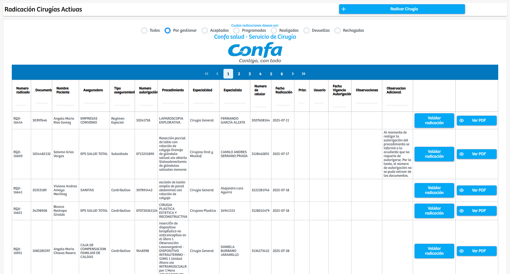
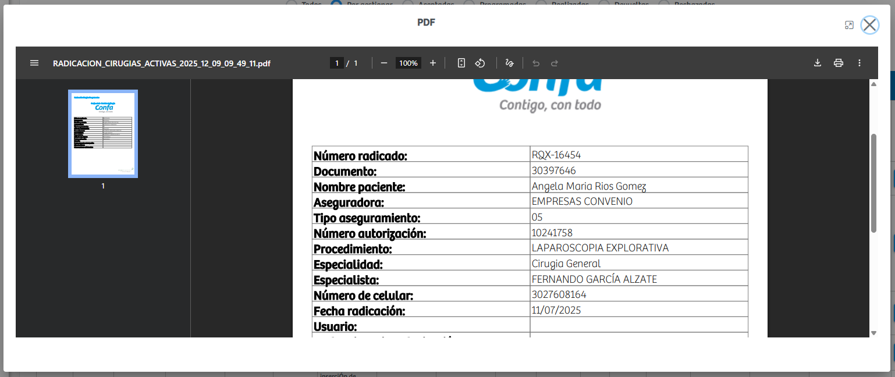
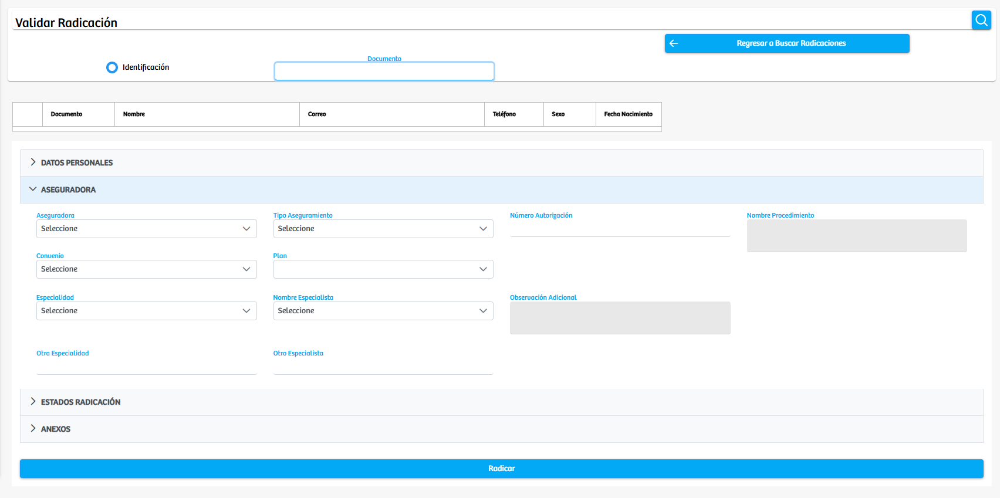

Modulos Sas-Web
Funcionalidades
Formulario Radicacion
El apartado Formulario de Radicación dentro del módulo de Quirófanos permite gestionar todo el proceso de radicación de cirugías, mostrando inicialmente un listado de cirugías activas junto con la información relevante de cada caso, como datos del paciente, aseguradora, procedimiento, especialista, fechas y observaciones asociadas. En la parte superior se encuentran varios filtros por estado, que permiten visualizar únicamente las cirugías que están Por gestionar, Programadas, Aceptadas, Realizadas, Devueltas o Rechazadas, facilitando así la revisión y clasificación del listado según el avance de cada radicación.
Cada registro de cirugía cuenta con dos acciones principales:
- Validar Radicación: abre un formulario donde el usuario puede editar o completar la información del caso, revisar datos personales, aseguradora, especialidad, autorizaciones, estados de radicación y anexos necesarios para el proceso.
- Ver PDF: muestra un modal con un informe en formato tabla que contiene la información completa del registro, permitiendo su consulta o impresión. 
Adicionalmente, en la parte superior derecha se encuentra el botón “Radicar Cirugía”, que lleva a un formulario independiente donde el usuario puede iniciar la radicación de un nuevo procedimiento. En este formulario se deben diligenciar los datos del paciente, información de la aseguradora, datos del especialista, autorizaciones, observaciones y demás componentes requeridos para formalizar la radicación de la cirugía.
En conjunto, este módulo funciona como una herramienta central para la gestión, edición y creación de radicaciones quirúrgicas, ofreciendo una interfaz ordenada y completa que garantiza la correcta documentación y control de cada procedimiento.